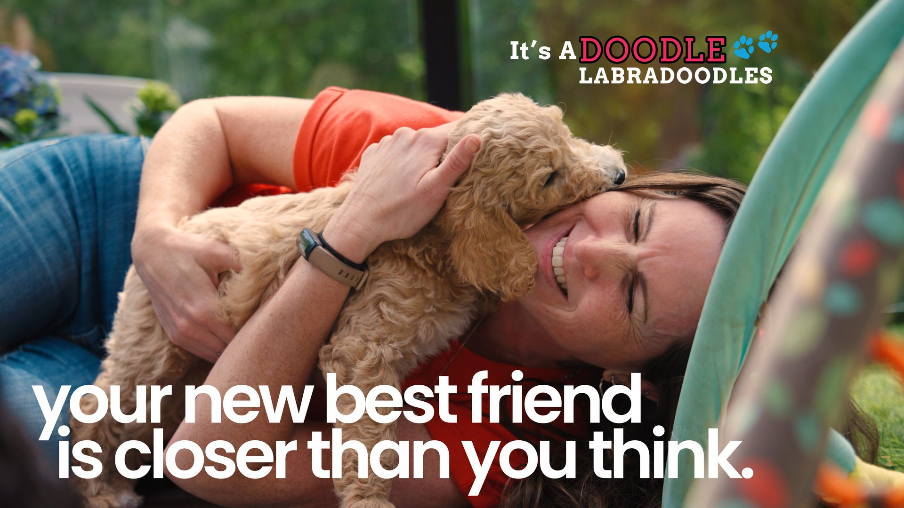
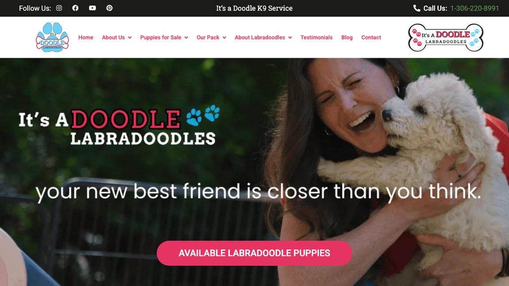
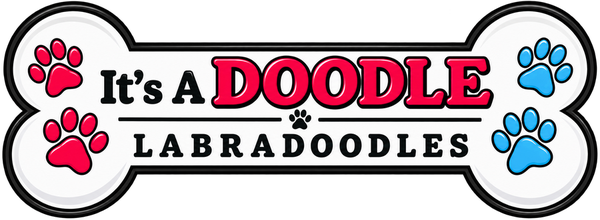
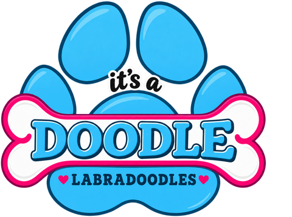
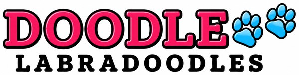
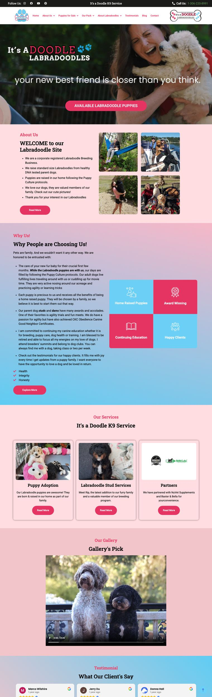
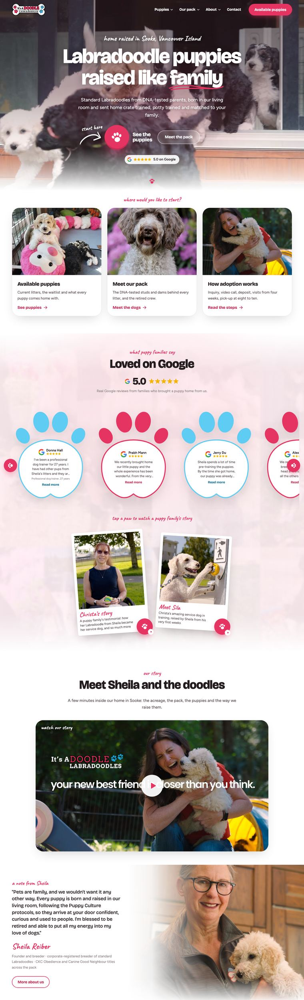

We've been making marketing video for a long time, and over the past year we kept running into the same problem. It wasn't a problem with the video.
A business would come to us for a commercial or a brand film. We'd plan it, shoot it and cut it for every screen it needed to run on, and it would do its job. People watched. People clicked. And then they landed on the website, or tapped through to the Instagram, or looked the business up on Google, and found something that felt like a different company. A different logo. Different colours. A slightly different name. A message from three years ago.
And a lot of them left. Not because the business was bad, but because nothing they landed on matched the thing that made them click. The video earned their attention, and the experience behind it didn't hold on to it.
That's the gap we started closing, and it's why Volare Media now offers brand alignment alongside our video, web and marketing work. This post is about what that means, why it happens to so many good businesses, and what fixing it actually involves, using a real project we've just started for It's A Doodle, a Labradoodle breeder in Sooke.
What brand alignment actually means
Brand alignment means that everywhere a customer meets your business, it looks, sounds and says the same thing. Same name. Same logo. Same colours and type. Same tone of voice. Same core message about who you are and why someone should choose you.
It sounds simple, and in principle it is. The hard part is the number of places your brand actually lives. For most small businesses, that's something like this:
Website
Google Business Profile
Facebook
Instagram
LinkedIn
YouTube
TikTok
Email signatures
Invoices & quotes
Signage & vehicles
Print & packaging
Video & ads
A customer rarely meets you in one of those places. They see an ad on Instagram, check your Google reviews, visit the website, maybe look at your Facebook page before they call. Every one of those is a moment where they're quietly asking: is this the same company, and do these people have it together? Alignment is making sure the answer is yes, every single time.
How a brand drifts (it's nobody's fault)
Almost no business sets out to have a messy brand. It happens slowly, and usually for good reasons.
Someone handy built the first website years ago. A staff member ran the Instagram for a while, picked their own fonts, then moved on. A freelancer somewhere in the world redrew the logo because the original file couldn't be found. A marketing company wrote a batch of blog posts in its own voice. A family member made a new Facebook cover for a holiday sale, and it stayed up. Each person did reasonable work in front of them. None of them had the whole picture, and none of them were asked to.
Give that a few years and you end up with three versions of the logo, the business name written two or three different ways, five shades of what's supposed to be the same colour, and a message that changes depending on which page you land on. It's the most common thing we see in small businesses on Vancouver Island and across BC, and it's especially common in family businesses and owner-run companies, where marketing has always been squeezed in around the real work.
Drifted
WebsiteYour Business Co.
FacebookYourBiz Services
Instagram@yourbiz.co
LinkedInYour Business Ltd.
Aligned
WebsiteYour Business
FacebookYour Business
InstagramYour Business
LinkedInYour Business
Illustration. Same business, four places a customer might find it.
The tricky part is that drift is hard to come back from one piece at a time. Fix the website and the socials still don't match. Update the Instagram and the Google profile is still using the old logo. Every fix is local, so the brand never actually comes back together. It needs to be done all at once, from one plan, by one team.
Why it matters more once you're spending on video and ads
If you're not marketing much, a scattered brand is a quiet problem. The moment you start paying for attention, it gets expensive.
Think about the path a customer takes. They see your video in their feed. It's good, it's on-brand, it makes a promise. They tap. Now they're on a page that has to keep that promise in the first few seconds, before they decide whether to stay. If the page looks like a different company, uses a different name or says something different from the ad, that moment of trust breaks. You paid to get them there, and you lost them at the door.
The opposite is just as true. When the ad, the landing page, the Instagram and the Google profile all look and sound the same, every touchpoint builds on the last one. People recognise you faster. Your reviews feel like they belong to the business in front of them. Your next ad works a little better because they've seen you before. That compounding effect is the whole reason big brands are obsessive about consistency, and it works the same way for a business with five employees.
Your video buys the attention. Your brand decides whether you keep it.
In progress
It's A Doodle: one brand, everywhere it shows up.
A much-loved Labradoodle breeder in Sooke, a brand video that was already working, and a full rebrand to bring everything else up to match it.
What we found at It's A Doodle
It's A Doodle raises Labradoodle puppies in Sooke, on Vancouver Island, for families across BC and beyond. We'd already worked with them on a brand video, the one you can see frames from on this page, built around a simple line: your new best friend is closer than you think. The video did what it was meant to do. It's warm, it's honest, and it shows exactly what makes them different.

A frame from the It's A Doodle brand video, produced by Volare Media.
But when we looked at where that video sends people, we saw the same pattern we described above. Over the years, the business had picked up more than one name online, appearing as both It's A Doodle K9 Service and It's A Doodle Labradoodles. The logo looked different from one platform to the next. The colours on the website, Facebook, Instagram and LinkedIn didn't quite match each other, and neither did the message. And the website itself had grown page by page over the years until it needed a real refresh, not another patch.

Before: the current homepage. The top bar says It's a Doodle K9 Service, the logos say It's A Doodle Labradoodles, and three different logo versions share one screen.



The three logo versions in use today. All of them are being replaced.
None of that is unusual, and none of it is anyone's fault. It's what happens when a small business grows, gets busy, and has different people helping at different times. But it meant that a family who loved the video could land somewhere that didn't feel like the same place.
What we're doing about it
We sat down with the owners and had a long, honest conversation about the whole picture: what's working, what's confusing, what customers ask about most, and how they want the business to feel to a family meeting them for the first time. Out of that came a full brand alignment package and a complete rebrand. The business is going back to its original name, It's A Doodle K9 Service, and everything is being rebuilt around it. We've just started, and here's the plan:
Audit every touchpoint. The website, Facebook, Instagram, LinkedIn, Google Business Profile, email and print, side by side, so everyone can see exactly where things have drifted.
One name. It's A Doodle K9 Service, written the same way on the website, every social profile, Google, invoices and signage.
All-new logos and design. A completely new logo set, developed with the owners and approved together: a main logo, a compact badge for profile pictures and small spaces, and a horizontal version for headers, all drawn from the same artwork.
One palette and one type style, designed alongside the new logos, so every post, page and print piece is built from the same parts.
One message. Write the core of who they are and why families choose them once, clearly, and use it everywhere: the website, the bios, the Google profile and the ads.
A refreshed website. A cleaner, simpler site built around the brand video, with the puppies, the process and the reviews easy to find, while keeping the pages and links that already work for them in search.
Instagram and Facebook, rebuilt and realigned. New profile pictures, cover images, bios, highlights and links, rolled out at the same time so nothing old is left behind.
Google, upgraded and connected. Their Google Business Profile refreshed with the new brand and linked to every one of their social platforms, so every path a customer takes leads to the same place.
A full brand guide. A practical guide covering the logos, colours, type, voice and templates, so anyone who touches the brand next, whether that's staff, family or a future freelancer, knows exactly how to use it.

BeforeThe current homepage. Two names, three logos, and a layout that has grown in layers.

AfterThe new homepage design, in progress. The name and logos update to It's A Doodle K9 Service with the new brand.
Hover over each page to scroll it
The new website is planned to launch in 2027, with the new name, logos and the rest of the alignment rolling out alongside it. We'll share the finished before and after when it's live, because the result we care about isn't a prettier logo. It's a family watching the video, landing on the site, checking the Instagram and the Google reviews, and feeling like they've met the same warm, trustworthy business every time.
What a brand alignment package includes
Every business is different, but a full brand alignment package from Volare Media usually covers:
A brand audit of every place your business appears online and in print.
Logo refresh or full rebrand, from tidying up the logo you have to designing a new one.
Colour, typography and visual style that work on screen, in print and in video.
Voice and core message, written once so everyone tells the same story.
A brand guide your team can actually use.
Website refresh or rebuild, so the place your marketing sends people matches everything else. More on that on our websites page.
Social and Google profiles updated together: images, bios, highlights and links.
Templates for social posts, email signatures and print, so it stays aligned after we hand it back.
Video and photo shot to match the brand, from marketing videos to the stills on your website.
It works for new brands and rebrands, too
Brand alignment isn't only for brands that have drifted. If you're starting a new business, it's the cheapest moment you'll ever have to get it right: build the name, logo, colours, message and guide together, and launch everywhere at once so you never drift in the first place.
And if you're ready for a full rebrand, with a new name, new colours or a new logo, alignment is what makes it stick. The most common rebrand mistake is changing the website and leaving the old look on Facebook, the Google profile and the van for another two years. A rebrand only works when it lands everywhere at the same time.
Why a video company does this
Fair question. The short answer is that we've always been a marketing company that leads with video. Our team brings more than fifteen years of combined experience across marketing, the film industry and social media, and the video we make is the most visible piece of a client's brand. We were already the ones thinking about how it looks, sounds and lands on every screen.
Brand alignment is the natural next step: making sure everything around the video is as strong as the video itself. And because the same team plans the brand, builds the website and makes the content, there are no agency layers, no hand-offs between five vendors and no one losing the thread. One team holds the whole picture, which is exactly what most drifted brands were missing in the first place.
Is your brand aligned? A five-minute check
Open your website, your Facebook page, your Instagram, your LinkedIn and your Google Business Profile in side-by-side tabs, and ask yourself:
Is the logo exactly the same everywhere, not just similar?
Is the business name written the same way in every place?
Are the colours the same colours, or just close?
Does your Instagram bio say what your homepage says?
Would a stranger know, at a glance, that these all belong to the same business?
Could you send someone a high-resolution copy of your logo in the next two minutes?
If a new staff member started posting tomorrow, is there a guide they could follow?
If you answered no to two or more, your brand has drifted, and your marketing is working harder than it needs to. That's not a crisis. It's a fixable, very normal problem, and fixing it makes everything else you spend on marketing go further.